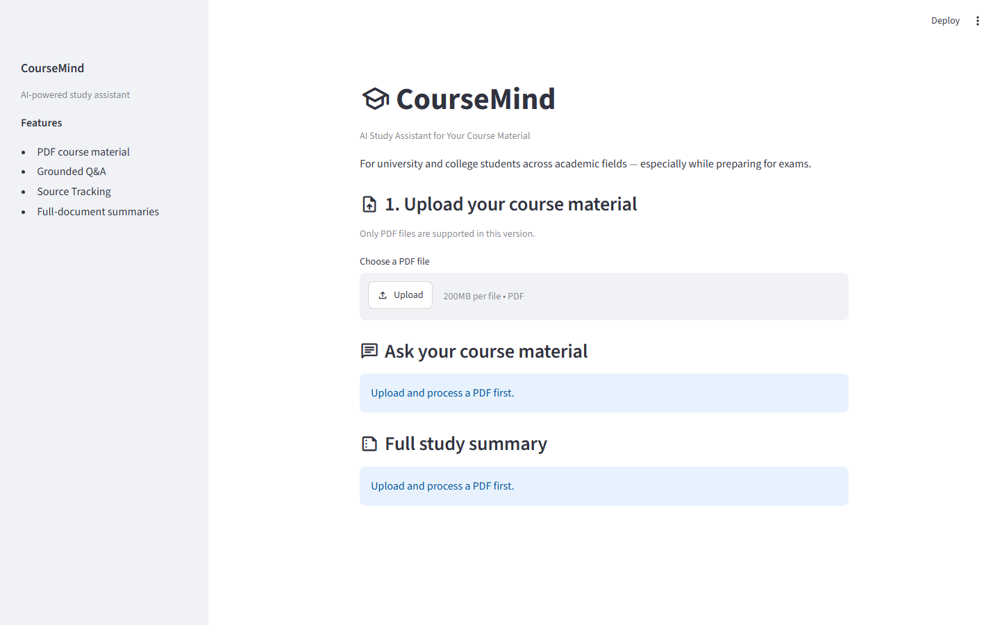

Upload a course PDF and get answers and full-document summaries grounded in that document – with the file and page cited – and an explicit “not found” instead of a guess. The real app is Streamlit + CrewAI + ChromaDB + OpenAI; this page shows the behaviour on a small sample document.
The sample is a 4-page mini guide, sample_js_guide.pdf, written for this demo. Retrieval here is simple keyword matching in your browser, and each answer quotes the matching pages. The real app uses embeddings and a language model, but follows the same rules: cite real pages, refuse when nothing relevant is found, route page and metadata questions without a model.
Pick a suggestion or type your own. Try something the document does not cover, such as “How do I deploy to AWS?”.
| You ask | Mode | How it is answered |
|---|---|---|
| “What is an array?” | semantic | Similarity search over the active document, then a grounding gate |
| “What is on page 3?” | page | Structural lookup by stored page number |
| “Which topics does it cover?” | overview | Whole-document coverage, not top-k |
| “How many pages does it have?” | metadata | Exact counts from the index, no model, no citation |
The classifier can never say “not found” – only retrieval and the programmatic grounding gate decide whether an answer exists.
Recorded run of the scripted suite in evals/ against the live backend (gpt-4o-mini, text-embedding-3-small), 9 Sep 2026. Numbers are copied from evals/results/latest_report.md; they are not produced by this page.

Screenshot of the Streamlit UI (streamlit run app.py). Run it yourself with your own OpenAI key – see the README.